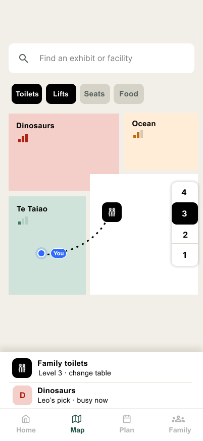
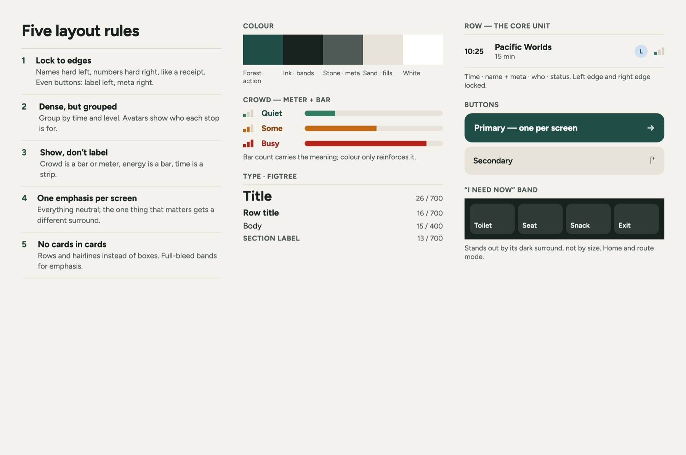

A family visit companion for when plans change inside a busy museum.
I explored how a mobile experience could help families make quick decisions during a museum visit — where to go next, how to respond when a floor gets busy, and where to find an immediate need such as a toilet, seat or exit. Te Papa is the setting for this self-initiated concept. The family needs, staff workflows and operational assumptions have not been validated with visitors or museum staff.
- Role
- Product designer (solo)
- Type
- Self-initiated concept, not client work
- Research
- Desk research only · no user or staff sessions
- Tools
- Figma · HTML/CSS prototype (coding assistance)
- Status
- Concept, not implemented
- Engineering review
- Not completed
Authorship: I designed the family experience, interaction flows, UI and design system, and explored the service and privacy implications behind the concept. I also conducted an accessibility self-audit of the concept screens. Screens marked “Designed in Figma” are my Figma work. Diagrams and operational specimens are HTML/CSS prototypes of my design; I used coding assistance to implement them.



Problem hypothesis
Family visits can involve frequent small decisions while attention is divided between the museum, the child and practical needs. This is a hypothesis, not a research finding.
Research status
0user or staff sessions. Public visitor information and desk research only.
What I designed
- Quick access to immediate needs
- A route shaped by family context
- Suggested route changes when conditions change
Design principle
Suggest, explain and let the visitor decide.
Not yet validated
- Whether these are the right family needs
- Whether families would follow a suggested reroute
- Whether the urgent-support workflow matches museum practice
Family visits involve small decisions under divided attention.
I started with a set of hypotheses about what can make a museum visit harder for a parent or caregiver: practical needs, changing energy levels, crowding and unexpected situations. I did not validate these with families, so they remain design hypotheses.
Immediate needs
A parent may need to find a toilet, seat, snack or exit quickly without navigating several screens.
Family energy
The best next stop may depend on children's energy, available time and whether the family is using a pram.
Changing conditions
A route that looked reasonable at the start of the visit may become less useful when part of the museum gets busy.
Limited attention
Interaction may need to work while the caregiver is walking, watching children and making decisions at the same time.
The experience is designed around “what do we do next?”
Instead of asking families to build a detailed itinerary, the concept focuses on decisions made during the visit.
Start with context
Three lightweight inputs — children, pram and energy level — shape an initial route.
Respond to change
If a floor becomes busy, the app explains what changed and suggests a different order. The visitor can accept or keep the original plan.
Get somewhere now
Toilet, Seat, Snack and Exit remain directly accessible when the planned route stops being the priority.
Design decisions
Three decisions shape the concept. None has been tested with families.
Three questions, then a route
Children, pram and energy level produce an initial route. I chose three lightweight inputs because I expected a full itinerary to need too much setup at the door. I haven't timed or tested the setup with real families.
Suggest, don't force
When a floor gets busy, the app says what changed, suggests swapping two stops and previews the new order. The visitor chooses “Swap order” or “Keep”; nothing reroutes without their confirmation. I chose this to protect visitor control. I haven't tested whether families prefer it.
Useful without an account
The concept provides navigation and family setup without requiring an account. For the high-stakes alert concept, child information is proposed to remain on-device until a parent explicitly shares it for that case. This is a proposed privacy-minimising approach, not a confirmed Te Papa requirement.
Routing options I compared
Compared on paper, not with usersPick and reorder exhibits
I expected too much setup at the door, and plans that break when a floor gets busy
Crowding shown on the map
Would need more granular data than I could assume; I expected it to be hard to read one-handed
Works with the assumed floor-level data and a three-state meter
The route can't tell which gallery is busy
Key UI
Three family-facing screens. Callouts link to the decisions above.
- 1Floor busyness, three statesQuiet, Some, Busy. → decision 1
- 2A route that fits the kidsEnergy becomes a time strip. → decision 1
- 3Busy stop moved laterThe reason is on the row. → decision 2
- 4“I need now” bandStands out by its dark surround, not size. → 02

- 5Says what changed“Level 3 just got busy.” → decision 2
- 6The visitor decidesSwap order or Keep. → decision 2
- 7Preview before committingSame 75 minutes, new order. → decision 2
Exploring a high-stakes edge case
I also explored what the experience might do if a child became separated from their caregiver. This is a hypothetical workflow, not a model of Te Papa's actual lost-child or security procedure.
One primary action
“Alert staff now” is the only primary button on a screen used under stress.
Shared on demand
The child card stays on the phone until the parent raises the alert. What staff would see, and how the case closes, needs staff and privacy input.
The multi-role workflow and access model are in Detail B.
Accessibility
A contrast check of the Figma screens against WCAG AA, measured from the exports. Two crowd labels fail on the cream background. This is a self-audit of the concept screens, not a WCAG compliance claim or accessibility study with users.
3.54:1
#C26A12 → #A3560C
4.49:1
#2F7D62 → #2A735A
6.51:1
—
5.95 / 7.41 / 9.69:1
—
Crowd level isn't colour alone
The meter uses one, two or three bars plus a word (Quiet, Some, Busy), so it still reads in greyscale.
One primary action under stress
The lost-child screen has a single primary button, “Alert staff now”.
Not yet checked
Screen-reader labels, large text and te reo Māori content haven't been designed or checked.
What I would test before taking the concept further
Because the core needs and workflows are still hypotheses, the next step would be validation rather than adding more features.
Test whether parents recognise the immediate-need shortcuts, understand the route logic and would accept or reject a suggested crowd swap.
Method: short contextual sessions with parents or caregivers during or shortly after a museum visit.
Walk through the high-stakes alert concept to understand whether the handover, information shown and escalation assumptions fit real museum practice.
Method: staff workflow walkthrough.
Check whether the proposed data minimisation, temporary sharing, connectivity assumptions and alert delivery are feasible.
Method: technical and privacy review.
Limitations: No interviews or usability sessions were conducted with families or Te Papa staff. I had no access to internal museum data, security procedures, occupancy systems or technical architecture. The family needs, operational workflows and expected outcomes therefore remain hypotheses. The concept has not been implemented or reviewed by engineering. Te reo Māori and assistive-technology behaviour are not yet designed or validated.
Self-initiated concept. Not commissioned by, affiliated with or endorsed by Te Papa.
Detail
Evidence, service model and supporting workAEvidence & uncertainty
What is observed, assumed, proposed and still unvalidated.
Public information, or measured in my own design
- Public visitor information. Te Papa's public visitor information covers floors, facilities and family visits. I used it to map the basic navigation and facility context available to visitors.
- Current public digital experience. I reviewed the publicly available visitor experience as context for the concept. The no-account approach is my design proposal, not a response to a validated adoption problem.
- Accessibility self-audit. Contrast ratios measured from my own Figma exports.
Working assumptions, because I had no access
- Venue data. The concept assumes floor-level occupancy, facility locations and exhibit metadata are available. I haven't seen evidence that Te Papa has or combines these.
- Family needs. I assumed that parents visiting with young children may need quick access to toilets, lower-effort routes, crowd information and help during urgent situations.
- Staff workflow. I modelled six potential stakeholder groups (Visitor Experience, Front-of-house, Security, Venue Ops, Curatorial / Learning, and IT / Privacy) and gave each a plausible operational need.
- System constraints. I assumed floor-level rather than room-level occupancy, existing staff devices, limited in-building connectivity, and a requirement to minimise children's personal data.
- These assumptions were not confirmed with families or Te Papa staff.
My design decisions
- A family visit companion for in-the-moment decisions, backed by a hypothetical service model (Detail B).
- A permission model that limits child information by role and time. A parent can raise an alert; staff would receive only the information needed for that case.
- A no-account entry point. Family setup information is stored on the device, rather than requiring an account before the visitor gets any value.
I did not validate whether:
- families actually leave early because children become tired;
- crowd peaks create the specific bottlenecks modelled;
- parents currently search for a lost child before contacting staff;
- Front-of-house staff experience the proposed volume of routine questions;
- the proposed workflow would reduce staff workload or incident-response time;
- families would use live crowd information to change their route.
Methods
Public visitor information
Floors, facilities, family info
Role and process mapping
6 hypothetical roles, assumed
Journey map: first question to closed incident
Family + staff
Privacy & bicultural considerations
Data minimisation · bilingual experience identified as future work
BService & role model
Three-layer service model, hypothetical roles, an exploratory access matrix and the lost-child workflow. Not Te Papa's organisation.
I used a hypothetical service model to pressure-test whether the family-facing concept raised operational, permission or ownership questions. These roles and workflows were not confirmed with Te Papa staff.
Planning, navigation, route changes, “I need now”.
Floor crowding, facilities, route conditions. Floor level only.
Front-of-house, security and venue ops: alerts and thresholds.
Hypothetical roles
Roles assumed · not based on staff interviewsParent / caregiver
Would use the family-facing experience for navigation, immediate needs and optional urgent support.
Front-of-house host
In the hypothetical service model, could receive a scoped alert and help connect the family with the appropriate response.
Security lead
The concept assumes an escalation role would need enough case information to respond if an alert remained unresolved.
Venue Ops manager
The routing concept assumes someone would maintain or approve the crowd thresholds used for route suggestions.
Curatorial / Learning
The concept assumes exhibit information such as location and visitor-facing attributes would need an accountable content owner.
IT & Privacy
The concept would require technical and privacy review of access, temporary sharing, retention and system administration.
Exploratory access matrix
ProposedThis matrix explores one possible least-access model for the concept. It is not Te Papa's permission model and has not been reviewed by Security, Privacy or IT.
Hypothetical lost-child workflow across roles
ProposedNot Te Papa's procedureCOperational exploration
An illustrative venue-data console and the constraints I assumed.
Exploring how venue data might be maintained
Illustrative operational conceptHTML/CSS prototype · coding assistanceIllustrative operational concept · not based on Te Papa's internal tools or workflows. I don't know whether Curatorial or Venue Ops teams would work this way.
Exhibit metadata Curatorial · edit
Busy thresholds Venue Ops · edit
Floor counts only · no personal data
2 exhibits selected · Set noise level → Quiet · Illustrative · preview before publish
Constraints I assumed
AssumedOccupancy data is floor-level only
The route could know a level is busy, not which gallery.
Privacy-sensitive child information
Proposed response: minimise collection and keep family setup on-device by default.
Bilingual experience would need to be designed from the start
The welcome screen offers a te reo Māori option, but bilingual content isn't designed yet. It would need to be developed with fluent speakers rather than machine-translated.
Patchy in-building connectivity
An offline map would likely be needed.
No new staff hardware
Alerts would reuse existing staff devices, if suitable ones exist.
DTrade-offs
Tensions I expected and what each decision gives up.
Tensions I expected, not ones raised by anyone at Te Papa.
Lower entry friction vs fewer opportunities to retain preferences or understand repeat use
Less persistent visitor data by design
Optimising the suggested route vs preserving visitor control
Suggestions may have less effect if visitors choose to keep their original route
More precise crowd information vs the additional data and infrastructure that would be required
The route can't tell which gallery is busy
A dedicated alert interface vs integrating with tools staff may already use
Feasibility and notification reliability would need technical and staff validation
Designing for this concept vs allowing future reuse
Some additional systemisation during concept development
EReusable UI foundations
Figma components, tokens and the three-state crowd meter.
I built the concept with reusable Figma components and tokens so the interface could remain internally consistent. Reuse by other venues is a design possibility, not a validated product strategy.

FProposed metrics
Three possible measures. No baseline or production data.
Percentage of suggested reroutes accepted
App analytics (assumed)
Routine navigation requests per visitor
Front-of-house records (assumed)
Median time from alert to staff acceptance
Alert logs (assumed)
Proposed metrics · no baseline or production data. These are not current Te Papa metrics.